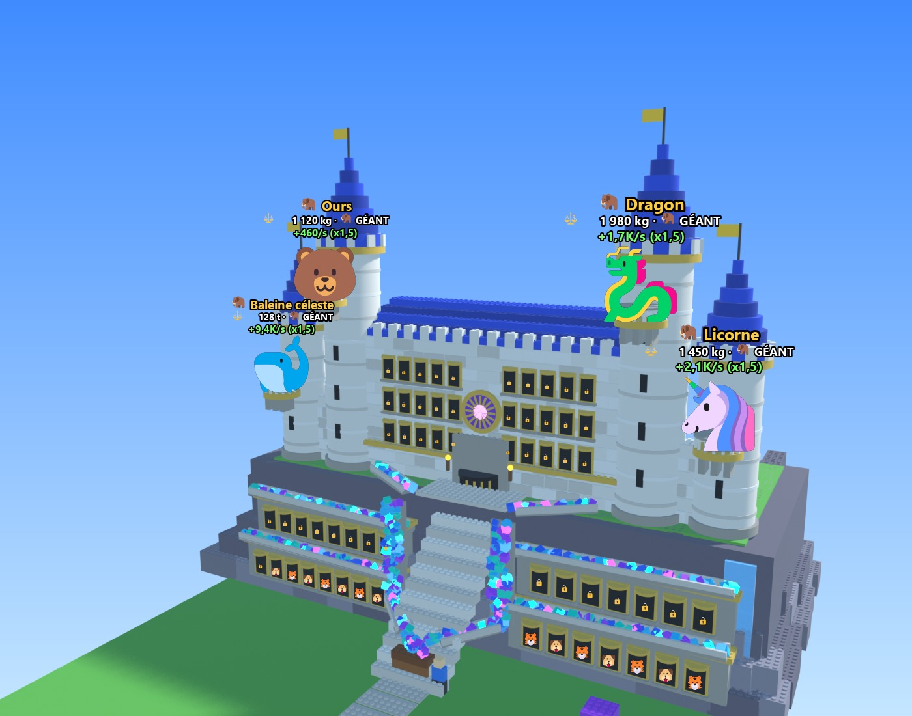
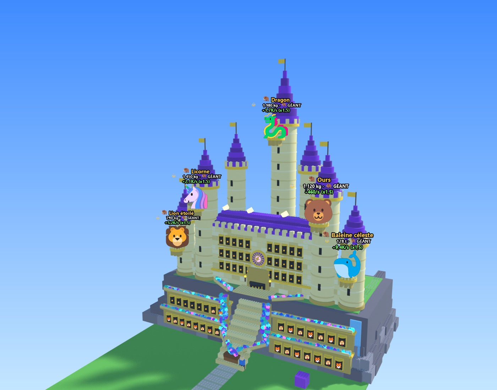
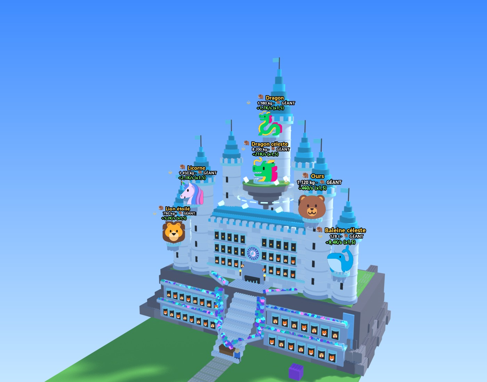
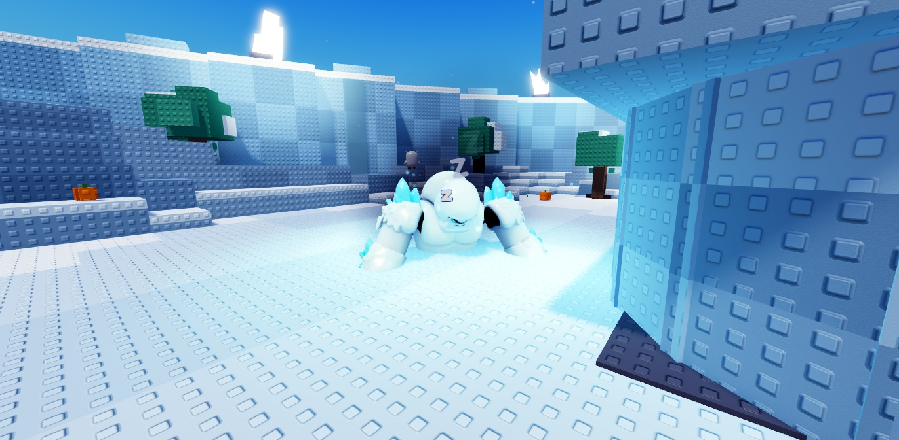
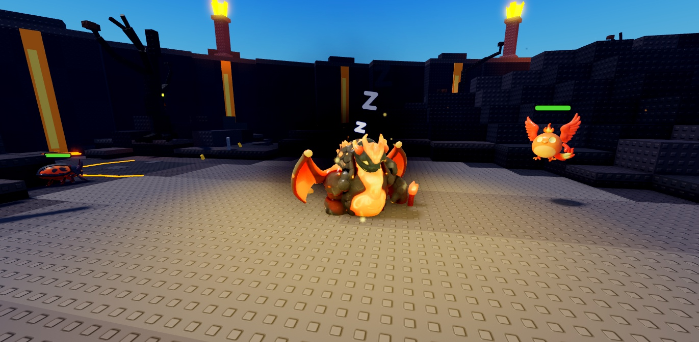
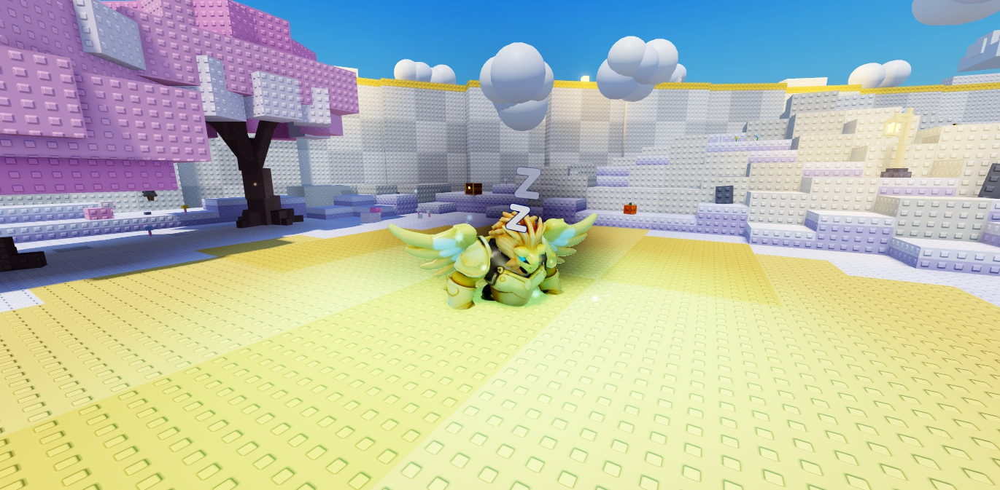

📘 Dossier technique : toutes les propositions validées
Projet Roblox · état au 18/10/2026 · reprend tout ce qui a été choisi depuis le 16/10, ce qui est déjà dans le jeu, ce qui est validé mais pas encore codé, et ce qu'il reste à décider.
💎 Boucle de jeu et économie ✅ Dans le jeu
La boucle : tu tires le levier, tu achètes l'œuf d'une espèce sur un socle, il couve, tu places tes créatures dans le château, elles remplissent le coffre de gemmes, tu améliores la machine et tu renais pour gagner des places. 601075e · 75fb3cd
Départ
- 500 💎 au départ : le premier œuf s'achète dès le tutoriel.
- Coffre de départ : 5 000 💎 (un débutant produit environ 4 💎/s).
Renaissances (×4 à chaque fois)
50K → 200K → 800K → 3,2M → …
- Gardé : la taille du coffre et les emplacements.
- Remis à zéro : les gemmes et les panneaux Puissance, Vitesse et Chance.
- Chaque renaissance donne +2 places dans le château (4 au départ).
Robux
- Robot mineur : uniquement en gamepass, affiché 149 R$. Sans lui, le robot refuse de démarrer.
- Packs de gemmes : tu reçois le montant prévu, ou plusieurs minutes de ta production si c'est plus. Exemple : la Poignée à 25 R$ donne 1 000 💎 ou 15 min de production.
⏳ Avant de publier crée le gamepass sur Roblox et colle son ID à la place de Id = 0 dans TycoonConfig.GamePasses.
| Œuf | Machine à œufs | Place centrale |
|---|---|---|
| Basique / Commun | inchangé | 600 |
| Rare | 3 000 | 3 000 |
| Épique | 12 000 | 18 000 |
| Légendaire | 50 000 | 60 000 |
| Mythique | 220 000 | — |
| Divin | 1 000 000 | — |
| Céleste | 4 500 000 | — |
| Citrouille (Halloween) | — | 3 500 |
🖥️ Interface et récompenses ✅ Dans le jeu
75fb3cd
Disposition de l'écran
- En haut : « 🏝️ Mon île » et « 🏛️ Place », qui téléportent directement.
- À gauche : Index, Boutique, Rebirth, Ma tour, en gros, sans cadre et avec un contour noir.
- À droite : les autres menus en plus petit (Équipe, Œufs, Incubateurs, Zones, Quêtes, Capsules, Cosmétiques, Construire).
- En bas à gauche : la chance « x1 🍀 » au-dessus des gemmes en très gros.
- Index et Rebirth apparaissent après les premières créatures.
Récompenses gratuites (en bas à droite)
- 📅 Quotidien : 7 jours, de 500 💎 au jour 1 jusqu'à « Œuf Épique + 10 000 💎 » au jour 7. Si tu rates un jour, la série repart au jour 1. Une pastille rouge apparaît quand c'est prêt.
- 🎁 Cadeau : toutes les 15 min de jeu, il vaut 5 min de production (minimum 300 💎). Il affiche « Prêt ! » en jaune et rebondit.
🐉 Créatures : poids, géants et raretés ✅ Dans le jeu
abd2a91 · aaa9dc0
Poids et taille
- Chaque espèce a un poids typique. Un individu pèse de ×0,1 à ×3,3 ce poids : un Dragon va de 60 kg à 1 980 kg, un Papillon de 1 g à 33 g, une Baleine céleste de 4 t à 132 t.
- Environ 2 % sont des GÉANTS 🦣 : badge, et message à tout le serveur.
- Taille : de ×0,7 (le plus léger) à ×2 (un géant).
- Gains dans le château : de ×0,8 à ×2. « Placer les meilleurs » en tient compte.
- Fusion : la créature obtenue garde le poids de la plus lourde des 5.
- En moyenne, les créatures rapportent environ 10 % de plus qu'avant (passer le minimum à ×0,7 rendrait ça neutre).
Grande annonce Divin+
- Pour une créature Divine ou mieux : bannière chez tout le serveur pendant 5 s, avec un son, la créature en 3D, le pseudo et la rareté. Les annonces passent l'une après l'autre.
- Légendaire et Mythique gardent le petit message habituel.
Garantie Légendaire+ après 50 œufs
- Après 49 œufs sans Légendaire+, le suivant en est un. Le compteur « 🎁 Légendaire garanti dans X œufs » s'affiche au-dessus du levier.
- Les tirages du robot et les re-remplissages comptent. Les œufs de la place ont un compteur par type.
- Les œufs d'espèce achetés à la machine ne comptent pas.
🏰 Le château « Mélange » 🛠️ Validé, à coder
La falaise (style 3), avec son escalier, ses galeries de vitrines et la cascade de gemmes, sous le château de conte de fées (style 2), toutes les tours collées, avec l'île flottante au cœur du château au dernier palier. Il remplace la façade actuelle, qui est en place dans le jeu mais que tu n'aimais pas (b6b4917 → 5695da9). Les rendus palier par palier attendent encore un dernier « oui » de ta part.
Composition
- 60 vitrines : 30 dans deux galeries de 15 creusées dans la falaise, juste au-dessus du coffre (les premières places, à hauteur des yeux), et 30 dans le château (5 + 5 sur 3 étages).
- 4 places au départ, +2 par renaissance. Chaque vitrine montre la créature en 3D qui bouge, son poids et son gain. 🔒 = place pas encore débloquée.
- Porte à herse dorée, avec une rosace en vitrail au-dessus à la place d'un géant.
- 6 places à géants au maximum (gain ×1,5) : 4 sur les tours, 1 sur la flèche, 1 sur l'île flottante.
💎 Cascade de gemmes (seulement visuelle)
- Des rigoles au-dessus des galeries ramassent les gemmes des vitrines.
- Deux rigoles descendent du château du haut.
- Les gemmes tombent en cascade de chaque côté de l'escalier.
- Une glissière les verse dans le coffre…
- … qui déborde de gemmes.
Le flot grossit avec les gains. L'animation est calculée sur l'écran de chaque joueur, seulement pour les châteaux proches. Le coffre se remplit exactement comme aujourd'hui.
| Palier | Renaissances | Couleurs | Géants | Ce qui apparaît |
|---|---|---|---|---|
| 1. Fortin de bois | 0 | 0 | La falaise et ses galeries, l'escalier, la cascade, un petit château brun derrière une palissade de rondins. | |
| 2. Château fort | 1 | 2 | 2 tours collées au château avec un balcon chacune, des créneaux et des drapeaux rouges. | |
| 3. Château de pierre | 3 | 3 | Les tours grandissent, balcon du milieu sur le toit, cascade d'eau le long de la falaise, toits bleus. | |
| 4. Château royal | 5 | 4 | Le balcon du milieu laisse la place à 2 tours extérieures reliées par un rempart, rosace en vitrail, bandeaux dorés. | |
| 5. Palais d'or | 10 | 5 | La grande flèche centrale arrive avec son balcon (le géant du milieu revient), 2 tours fines, des cristaux sur les toits. | |
| 6. Citadelle céleste | 20 | 6 | L'île flottante au cœur du château : nuages, halo, quatre cristaux et un grand balcon pour le 6ᵉ géant. Tout devient blanc et cyan. |





Au passage d'un palier, le château se reconstruit avec de la poussière et des étincelles, et tout le serveur est prévenu. La tour du palier suivant est annoncée par un échafaudage. Les ponts prendront le style du château de leur île (bois, pierre, or, cristal…).
🏝️ L'île en U 🛠️ Validé, à coder
Ton idée : en arrivant sur l'île, on tombe sur le château en premier. Le château est devant, côté pont, un jardin étroit longe chacun de ses côtés, et le grand parc derrière grandit vers la mer. L'île reste carrée. Validée le 18/10 à 00:11 (c952691 · 5b7bfa7), c'est la prochaine étape du code.
Chiffres
- Îles à 341 studs du centre (559 aujourd'hui).
- Pont de 121 studs qui ne change jamais.
- Le jardin garde autant de cases qu'aujourd'hui à chaque niveau, de 348 au niveau 1 à 1 300 au maximum.
- Au niveau maximum, les îles ne se touchent pas.
Pour que ce soit beau
- Cour d'honneur pavée face à la façade : cascade, coffre et géants accueillent le visiteur.
- Deux allées-jardins symétriques, avec une haie basse côté mer et des lanternes, comme un château à la française.
- Grand parc où se promènent tes créatures, avec un belvédère sur la mer au fond.
Où va chaque élément
- Machine à œufs : à gauche de la cour.
- Tableaux d'amélioration : à droite de la cour.
- Fusion et autel : aux deux coins du parc, de chaque côté de la porte arrière.
- On passe par la porte arrière ou par les allées : on n'est jamais bloqué.
🌍 Le monde
Place centrale ronde ✅ Dans le jeu
- L'arène est supprimée, la place est au centre de la carte, et on y apparaît. 1428085
- Disque de pierre de 260 studs de diamètre, avec des garde-fous et des lampadaires en cercle. c9905d2
- 6 portails de zone en anneau à 86 studs du centre, chacun tourné dans la direction de sa zone, avec son panneau.
- Prévu : spawn autour d'une fontaine, œufs et incubateurs en arc, 8 arches de départ de pont, panneau des boss, classement et portail « Mon île ».
⏳ À fournir tes captures de référence pour le décor final de la place.
Ponts en étoile et plaques ✅ Dans le jeu
- Un pont par île, de la place jusqu'à l'île, avec une arche au nom du joueur et un palier de repos sur les longs ponts. 1428085
- Plaques de vitesse : une dalle néon tous les 45 studs, ×3 pendant 4 s dans les deux sens, avec des traînées, une caméra élargie et la barre « ⚡ Vitesse ×3 ». Le bonus s'arrête hors du pont et de la place. 0575119
- 8 îles par serveur, aujourd'hui à 559 studs du centre.
🛠️ À coder le rapprochement à 341 avec l'île en U, et le style du pont qui suit le palier du château.
⚔️ Les 6 zones et leurs boss ✅ Dans le jeu
f6d193c · 85d7bdd · cd40fa5 · c7e4701
| Zone | Pour entrer | Boss | Difficulté | Ressource · décor |
|---|---|---|---|---|
| 🌼 Prairie | libre | 🎃 Roi Citrouille (Halloween) | Facile · PV ×1 | — |
| 💎 Grotte | une Rare | 👻 Dragon Spectral | Moyen · PV ×1,8 | dégâts ×1,25, gemmes ×1,6 |
| ❄️ Glaces (nouvelle) | une Épique | ❄️ Yéti Géant | Difficile · PV ×3 | ❄️ Givre · neige, sapins, pics de glace, flocons |
| 🌙 Bois des Ombres | une Légendaire | 💀 Liche Ancienne | Très difficile · PV ×4,5 | — |
| 🌋 Volcan (nouvelle) | une Mythique | 🌋 Dragon de Lave | Extrême · PV ×6,5 | 🔥 Magma · basalte, rivière de lave en néon |
| ☁️ Céleste (nouvelle) | une Divine | 🦅 Griffon Doré | Légendaire · PV ×9 | ☁️ Nuage doré · sol crème doré, arches dorées |
Déroulement d'un boss
- Les 6 boss dorment en même temps pendant 10 min dans la clairière de leur zone (respiration, « Zzz »), puis disparaissent 20 min. Un minuteur les annonce.
- Le bouton « ⚔️ Réveiller le boss » ouvre le panneau de groupe : seul ou avec 2 joueurs (amis en premier ⭐), qui reçoivent une invitation.
- Au lancement, le boss se réveille en 6 temps. Chaque groupe a son boss : les autres le voient toujours endormi.
- Le combat ne change pas : butin selon la participation, une victoire par boss et par passage.
21 nouveaux modèles 3D
- Boss : Yéti Géant (~15 studs), Dragon de Lave (~11,5), Griffon Doré (~12).
- Glaces : wyverne de givre, golem de glace, ours polaire, loup des neiges, hibou des neiges, gelée de givre.
- Volcan : dragonnet de lave, golem de magma, oiseau de feu, salamandre de feu, scarabée de lave, gelée de magma.
- Céleste : griffon céleste, baleine des nuages, gardien céleste, pégase des nuages, aigle doré, fée céleste.
⏳ À vérifier un vrai combat contre les nouveaux mobs avec une équipe forte (aucune erreur, mais pas encore observé).





🎬 Animations ✅ Dans le jeu
Boss plus vivants f4b35cf
- Ressorts en chaîne : le bassin entraîne le dos, les épaules, puis les bras, chacun avec un petit retard et un léger dépassement.
- Buste qui se plie autour des hanches, tête qui regarde le joueur le plus proche, respiration et changements d'appui.
- Réveil en 6 temps : sursaut, appui sur les bras, accroupi, redressement, rugissement, garde. Le dragon relève la tête, se redresse, rugit et décolle.
- Fins d'attaque en 0,4 s au lieu d'un saut de pose. Le serveur attend 4 s avant la première attaque.
Créatures fluides 01ad744 → 653a7e8
- Moteur commun
CreatureMotion: virages, vrais pas en trot, rebond, respiration, tête, queue, ailes avec planés, sauts élastiques. - Mobs lissés et prédits sur ton écran, sans saccades. Le serveur ne déplace plus les mobs des zones vides.
- Familiers qui suivent en douceur, avec de l'élan à l'attaque et une bascule au K.O.
- Créatures de l'île : accélèrent, freinent, se couchent pour dormir.
- Vitrines, géants, Index et éclosion vivants, avec un œuf qui vacille et une créature qui saute de joie.
Sur téléphone : animation complète de près, version simplifiée de loin, rien pour ce qu'on ne voit pas.
🗺️ Feuille de route
| Ordre | Chantier | État | Détail |
|---|---|---|---|
| 1 | Île en U : placement | 🛠️ prochaine étape | Îles à 341 du centre, pont fixe de 121 studs qui arrive dans la cour d'honneur. |
| 2 | Île en U : construction | 🛠️ à coder | Cour, deux allées-jardins, grand parc qui grandit vers la mer. Grille de construction en plusieurs morceaux. |
| 3 | Île en U : sauvegardes | 🛠️ à coder | Mise à jour qui replace les décorations déjà posées et rembourse celles qui ne rentrent plus. |
| 4 | Château Mélange | 🛠️ à coder | Remplace la façade actuelle : 6 paliers, 60 vitrines, 6 géants, île flottante, cascade de gemmes. |
| 5 | Ponts au style du château | 🛠️ à coder | Bois, pierre, or, cristal… selon le palier. Le bord des plaques suit la couleur du pont. |
| 6 | Décor de la place | ⏳ tes captures | La forme ronde est faite, le décor final viendra de tes références. |
| 7 | Gamepass Robot mineur | ⏳ avant publication | Créer le gamepass sur Roblox, fixer le prix, coller l'ID dans TycoonConfig.GamePasses. |
| 8 | Combats des nouveaux mobs | ⏳ à observer | Essai avec une équipe soignée au Volcan et au Céleste. |
Déjà dans le jeu (du plus ancien au plus récent)
- Esplanade ouverte, machine à œufs en grand arc espacé (rayon 18, environ 8 studs entre les socles), panneaux de biais, picots sur tous les sols. 3414829 → 9122c92
- Interface, quotidien, cadeau, coffre à 5 000. 75fb3cd
- Prix, renaissances ×4, robot en gamepass. 601075e
- Annonce Divin+ et garantie Légendaire+. aaa9dc0
- Poids, taille et géants. abd2a91
- Première façade de château par palier (sera remplacée par le Mélange). b6b4917 → 5695da9
- Boss plus vivants. f4b35cf
- Carte : arène retirée, place au centre, 8 îles, ponts en étoile. 1428085
- Boss endormis dans les zones. cd40fa5
- Plaques de vitesse. 0575119
- Monde à 6 zones, 21 modèles, corrections. f6d193c · 85d7bdd · c7e4701
- Créatures fluides, 5 étapes. 01ad744 → 653a7e8
- Place centrale ronde. c9905d2
🚫 Ce qui a été écarté à ne pas refaire
- Façade seule : pas assez impressionnante, d'où le château Mélange en volume.
- Tour au milieu du château : remplacée par un balcon, puis par la flèche.
- Géant au-dessus de la porte : remplacé par la rosace en vitrail.
- Tours détachées du style 2 : toutes les tours sont collées.
- Boss en blocs pour les croquis : les vrais boss sont plus réalistes.
- Pontons entre îles voisines : remplacés par des ponts en étoile depuis la place.
- Tapis roulant sur tout le pont (option B) : plaques espacées choisies.
- Île ronde (jardin autour du château) : tu préfères une île carrée.
- Jardins larges à gauche et à droite : éloigne les îles (cercle ~597) ou déborde chez les voisines à 341.
- Jardin en éventail / qui grandit vers la place : dépassés par l'île en U.
⚙️ Où se règle quoi
| Sujet | Fichier | Réglage |
|---|---|---|
| Gamepasses (Robot) | Configurations/TycoonConfig.luau | GamePasses |
| Annonce Divin+, garantie | Configurations/EggConfig.luau | seuil et durée d'affichage |
| Poids et géants | Configurations/WeightConfig.luau | plages de poids, taille, gains |
| Château et paliers | Configurations/CastleConfig.luau · Modules/CastleBuilder.luau | paliers, places à géants |
| Machine, panneaux | Configurations/EggRollConfig.luau | BoardsFace (angle des panneaux) |
| Picots au sol | Configurations/WorldConfig.luau | Art.StudFloorMin |
| Quotidien, cadeau | Configurations/RewardConfig.luau | récompenses des 7 jours |
| Disposition des îles | Modules/MapLayout.luau | GetIslandRingRadius() |
| Boss des zones | Modules/ZoneBosses.luau · Configurations/BossConfig.luau | cycle 10 / 20 min, difficultés |
| Mouvements des créatures | Modules/CreatureMotion.luau | ressorts, pas, ailes |
| Vitesse des plaques | Modules/BoostService.luau (serveur) | ×3 pendant 4 s, sans triche possible |
Les chemins partent de src/ReplicatedStorage/, sauf CastleBuilder et BoostService qui sont dans src/ServerScriptService/Modules/. Le code part dans Studio par Rojo (port 34872).